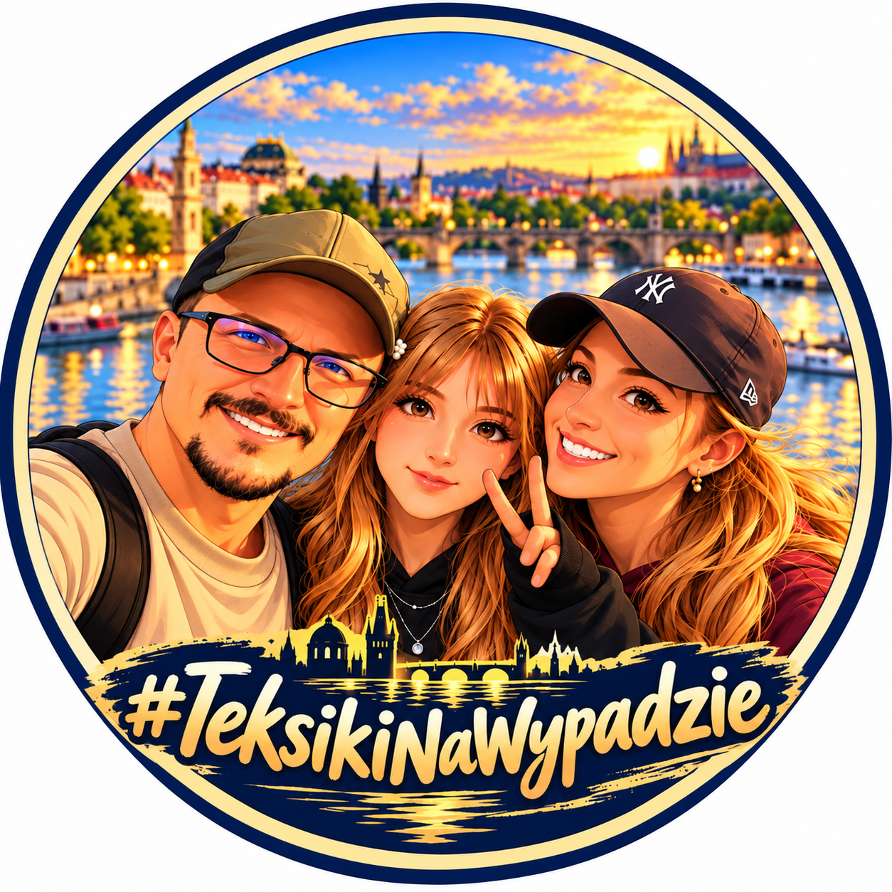

☀️ Łapiemy oddech🏙️
Miejskie odkrywanie
Praga o zachodzie słońca
Złota godzina, most nad Wełtawą i wspólny spacer po jednym z piękniejszych miast Europy.

#TeksikiNaWypadzie#TeksikiNaWypadzie — rodzinne podróże, wypady z namiotem i wspomnienia zbierane po drodze. Zajrzyj do naszych przygód!
Miejskie odkrywanie, noc pod namiotem i chwile razem — zobacz, co czeka na nas po drodze.
Złota godzina, most nad Wełtawą i wspólny spacer po jednym z piękniejszych miast Europy.
Namiot na dachu, leśna cisza i wieczór przy ogniu — tak smakuje noc poza domem.
Pakujemy samochód i ruszamy przed siebie. Najlepsze momenty często zaczynają się po drodze.
Lubimy ruszać przed siebie, odkrywać nowe kąty i dzielić się tym, co spotyka nas po drodze. Bez wielkiego planu — za to z ciekawością, uśmiechem i kamerą pod ręką.
Wskakuj na kanał i sprawdź, dokąd zaprowadzi nas następna przygoda.
Odwiedź #TeksikiNaWypadzie